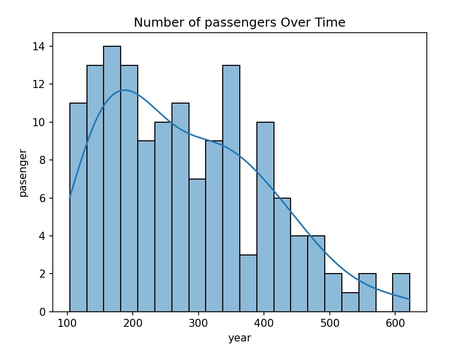

My Projects

Employee Data Analysis
Sales Analysis Dashboard – Power BI Built an interactive dashboard using Microsoft Power BI to analyze sales data. Key Features: analyzed data from multiple tables including Customers, Employees, Orders, and Products. Created KPIs such as Total Sales and Total Quantity. Developed visualizations to identify top-selling products and monthly sales trends.



Profit and Sales Analysis
Developed an interactive business dashboard using Power BI to analyze sales and profitability performance. Created KPIs such as Total Sales, Total Profit, and Profitability percentage. Designed visualizations to track monthly trends in sales and profit.


Employee Data Analysis (Python)
Processed and analyzed employee data from CSV using Python. Performed data cleaning, filtering, sorting, and feature creation. Calculated average salary by department and created pivot tables for salary analysis.